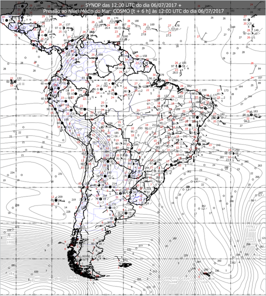

Na análise da carta sinótica de superfície das 12Z do dia 25/06, observa-se a presença de uma frente estacionária entre o leste da Argentina e Atlântico adjacente e o ramo frio segue pelo Oceano Atlântico Sul até um ciclone de 964 hPa, centrado em 60°S/16°W. Outro sistema frontal transiente é obervado no Oceano Pacífico, próximo ao Chile, associado a um ciclone extratropical no valor de 996 hPa em torno de 34°S/78°W. A Alta Subtropical do Atlântico Sul (ASAS) tem valor de 1032 hPa em torno de 33°S/23°W, ao sul de sua posição climatológica. A Alta Subtropical do Pacífico Sul (ASPS) encontra-se com núcleo de 1028 hPa, fora do domínio desta figura. A Zona de Convergência Intertropical (ZCIT) atua em torno de 07°N/09°N no Oceano Pacífico e 06°N/08°N no Oceano Atlântico.
Esta previsão ainda não teve nenhuma ação por parte de nenhum usuário
|  | |
| Carta ainda não disponível |